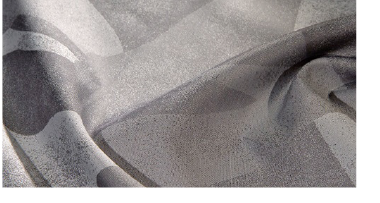
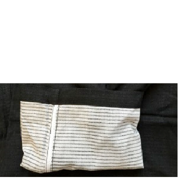
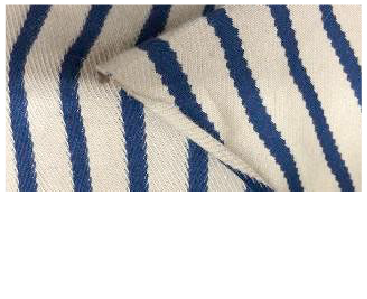
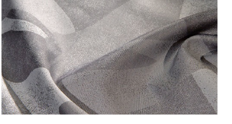
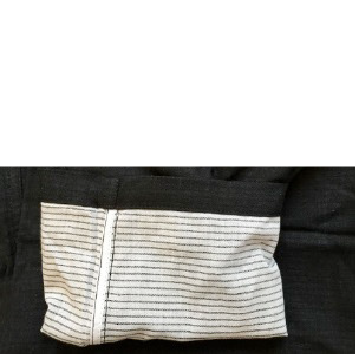
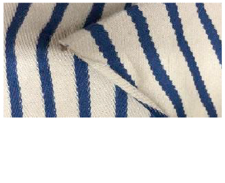

Ozeitgeist do momento con rma que cada vez mais pessoas estão procurando alcançar um estágio de equilíbrio e melhorar suas vidas com um maior senso de totalidade. É preciso consertar os bugs, os erros de um sistema que, durante anos, se fortaleceu com base em padrões imutáveis, sazonalidade, produção desenfreada, desperdícios, exclusão etc.
Nesse cenário, percebe-se que a indústria da moda e seus diferentes atores encontram-se na busca por caminhos alternativos em que o tema “sustentabiliade” já não se traduz mais de uma maneira rígida, já que a moda implica em renovação contínua. Estão centrados em estabelecer uma nova postura humanizada, mais tolerante e inclusiva, e uma tomada de consciência que acaba por resultar em numa pluralidade de ações que implicam na adoção de melhores práticas em cada etapa do processo de design e da produção. Adaptar-se aos “novos tempos” fará bem para os negócios. Um tema que retrata uma visão de futuro e que aborda não somente fazer o que é politicamente correto ou sobre “a coisa certa a se fazer”. Trata-se também de um grande passo em direção à aceitação das nossas limitações, das nossas diferenças e dos erros cometidos em prol da melhoria da condição da vida humana, de forma que tudo pode estar conectado e em harmonia, uindo de maneira construtiva, exível e adaptável. Suplantar os velhos códigos de criação, produção e apresentação é aproximar-se do consumidor com verdade e equidade; é construir uma indústria capaz de dialogar com o hoje e com um suposto amanhã que está sendo construí- do no agora..
Palavras-chave: Alcançar o equilíbrio, corrigir os erros, renovar, melhores práticas, assumir a verdade, inclusividade.
REVIVER OU REEDITAR O PASSADO, SUA ORIGEM OU HISTÓRIA.
MODA X IDENTIDADE X TERRITÓRIO: COMUNICAR ELEMENTOS HISTÓRICOS, CULTURAIS E SOCIAIS; DESIGN PAUTADO EM RAÍZES.
VALORIZAR A SOCIOBIODIVERSIDADE: ETNIAS, CULTURAS E SABERES. MESCLAR SÍMBOLOS CULTURAIS E TÉCNICAS PASSADAS E CONTEMPORÂNEAS.
INOVAR POR MEIO DE PRODUTOS GLOCAIS*.
CAMINHO DAS PEDRAS.
NARRATIVAS ENTRELAÇADAS.
RAÍZES DESLOCADAS.
IDENTIDADES NÔMADES.
RECONFIGURAR ENRIQUECIMENTO DE CÓDIGOS.
MULTILOCAIS.

 




